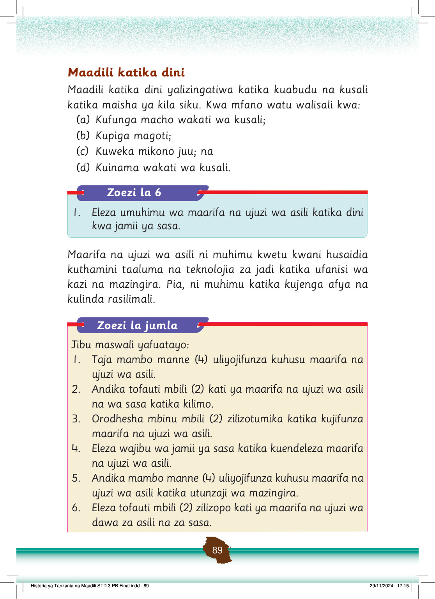

Maadili katika dini
Maadili katika dini yalizingatiwa katika kuabudu na kusali katika maisha ya kila siku.
Kwa mfano watu walisali kwa:
(a) Kufunga macho wakati wa kusali;
(b) Kupiga magoti;
(c) Kuweka mikono juu; na
(d) Kuinama wakati wa kusali.
Zoezi la 6
1. Eleza umuhimu wa maarifa na ujuzi wa asili katika dini kwa jamii ya sasa.
Maarifa na ujuzi wa asili ni muhimu kwetu kwani husaidia kuthamini taaluma na teknolojia za jadi katika ufanisi wa kazi na mazingira.
Pia, ni muhimu katika kujenga afya na kulinda rasilimali.
Zoezi la jumla
Jibu maswali yafuatayo:
1. Taja mambo manne (4) uliyojifunza kuhusu maarifa na ujuzi wa asili.
2. Andika tofauti mbili (2) kati ya maarifa na ujuzi wa asili na wa sasa katika kilimo.
3. Orodhesha mbinu mbili (2) zilizotumika katika kujifunza maarifa na ujuzi wa asili.
4. Eleza wajibu wa jamii ya sasa katika kuendeleza maarifa na ujuzi wa asili.
5. Andika mambo manne (4) uliyojifunza kuhusu maarifa na ujuzi wa asili katika utunzaji wa mazingira.
6. Eleza tofauti mbili (2) zilizopo kati ya maarifa na ujuzi wa dawa za asili na za sasa.
Historia ya Tanzania na Maadili STD 3 PB Final.indd 89
29/11/2024 17:15